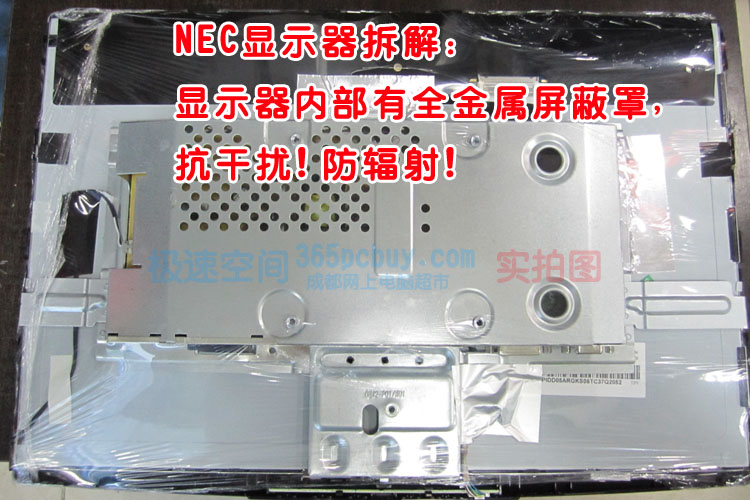
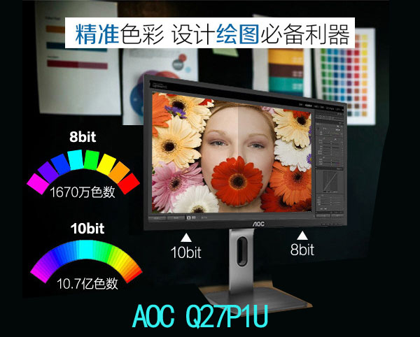

显示器什么品牌好 市场显示器主流品牌 大湿一一为您点评（此文更新时间2019年3月30日）
显示器选什么最好呢，有人说越贵越好，那不一定，同品牌32寸一般比23寸贵，但很多人用32寸却感觉不适应，太大了头晕。32寸的4K显示器有几千元的，有4万多的，对游戏玩家来说，4万可不一定比几千元的更好，因为很多天价显示器都是专业用途，对游戏玩家来说不对味，举个例子，某人准备跑长途客运赚钱，应该买辆50万的大客车，是不是500万的法拉利就更好？因此，只看价格对比是没有意义的，贵的不一定适合你的需求。
经常有客户问：显示器什么牌子好？看完此文你可能会有一个答案。
注：
1、此文只涉及消费级电脑显示器，不包含电视、也不包含艺卓这类专业品牌。
2、此文只涉及一般容易买到的品牌，有很多优秀品牌的显示器（如三菱、夏普）在国内没有销售渠道，不在此文讨论范围。
以前显示器中三大老一线品牌是：三星、飞利浦和LG，现在格局有变化，从广义上看一线品牌有：三星、LG、NEC、飞利浦、AOC、DELL、华硕（电竞类）。这里主要是从国内知名度、品牌历史、工厂实力、研发实力和国内销量这五个方面综合评判，仅为小虫个人看法。特别注意：一线和二线没有明确的界限，10个人可能有10种划分，一线品牌并不是所有产品都比二线品牌的好，二线中也有很多产品的质量和性价比均高于一线。
根据显示器市场占有率、关注度、工厂实力的综合考量，前十大品牌分别为：三星、AOC、飞利浦、戴尔、LG、优派、华硕、HKC、明基和宏碁。
三星（SAMSUNG）：所有品牌显示器（包括杂牌）几乎都提供三年质保，唯独三星只提供一年，现在也是如此，这个确实让人想到了两个词：”牛“和”高傲“。不过，三星的技术实力和外观设计是其敢于“只质保一年仍然不愁销量”的基础。三星目前的高端显示器主要是PLS屏，和IPS相比总体效果在一个档次，但颜色（特别是红色）表现力要略微强于IPS，比如看一朵花，PLS屏的红色比IPS的要艳丽一点。但注意：如果不是图形为主的客户没有必要在意这个。
三星优点：技术领先、外观设计出色。
三星缺点：价格偏高，有的高端型号却搭配低端VGA线。
推荐型号： S24D360HL 23.6英寸 PLS 查看>>
LG：技术研发能力强大。有人还记得“LG未来窗”吗？1998年，LG电子借助未来窗完全平面显示器迅速称为当时CRT领域的领导者，在中国显示器叱咤风云。IPS虽然是源于日立的技术，但市场很多中高端液晶都一度采用了LG的IPS屏。LG的官方售后让人非常满意，小虫的一个客户，大概在2012年买了一台LG某款23寸的显示器，当时购买价格为1200多元，2015年初这台显示器坏了，差1个月到质保期，于是小虫将其返给总代，由于此型号已经停产，也无法维修，最后官方给出了退款的处理方案，退了850元，而当时买一台全新的LG 23寸（参数还略高于以前的显示器）也只要860元，相当于只多花10元就能换全新机，这样的官方售后确实很赞。LG工厂无论规模还是技术实力都是一流的，最大缺点是在国内推广力度不足，运作上还欠火候。比如今年初，LG把三年质保改为一年，结果呢，销量下滑，草草收场，没等几个月又改回质保三年，感觉这个有点搞笑。
LG优点：技术领先、实力雄厚，官方售后服务好。
LG缺点：国内推广较低，外观创新不足。
推荐型号：LG 29UM58-P 29英寸 2K IPS显示器 查看>>
简评：LG在2012年11月就发布了全球全球第一款21:9宽高比的全景显示器。21:9的超宽屏又被称为“带鱼屏”，可以说是一台顶两台，适合多种场合，它不仅能带来身临其境的观影体验，在办公、制图等多种场合下，特别是需要多开窗口模式下，可以避免了窗口频繁切换，让工作更加得心应手。超宽频对游戏的帮助就更大，LOL比赛已经禁止使用21:9超宽屏，原因是玩家使用21：9的超宽屏，在游戏地图视野显示上，大大的超过了传统的16：9屏幕，在实际游戏对战中，当敌人还没有见到你的人影时，你就已经把对手看得一清二楚，水平相近的情况下可以完虐对方。现在你知道有的LOL“高手”的水平了吧，很可能和你差不多，只是显示器更好而已。
说完三星和LG，不得不说的是冠捷。这个以AOC起家的公司，于2005年收购荷兰飞利浦的显示器业务后，制造总量超过了三星，成为全球第一大PC显示器制造商。冠捷的全称是：冠捷科技有限公司，于1999年10月在香港及新加坡交易所上市，港股代码00903，目前最大股东是中国长城计算机深圳股份有限公司，直接持股24.32% 。 （2016年6月30日数据）。有客户问：我买的AOC显示器上写的是“武汉艾德蒙科技股份有限公司”，这和冠捷有什么关系呢？目前埃德蒙的法人股东为福建捷联电子有限公司，而福建捷联为冠捷投资有限公司的子公司，这下应该清楚了，埃德蒙的大股东就是冠捷。“冠捷今后定位为纯代工，艾德盟为纯销售”。AOC是其英文名称缩写AOC名称来源于： Admiral Overseas Corporation(艾德蒙海外股份有限公司的英文缩写，中文名称为冠捷科技集团）。
冠捷旗下品牌主要有：日电（NEC）、飞利浦（PHILIPS）、AOC、 长城（GreatWall）、易美逊（ENVISION）、玛雅（MAYA）、拓普威（TOPVIEW）、梦想家（imagic）、米罗（milo）、纽索（NESO）、Amark等。
注：NEC品牌不属于冠捷，属于代理销售关系，由冠捷代工、负责渠道销售等，因此在广义上算是冠捷体系里面的一个品牌。
下面看看这些品牌的区别：
日电（NEC）：在冠捷体系里面定位最高，唯一提供五年质保显示器（液晶屏三年）。NEC是以行业为主导，大众消费为辅，也就是主要是面向高端企业用户，在美国，intel、微软等科技领袖都以NEC显示器作为选用标准，由此可见其在显示器领域的领导者地位。NEC虽然是冠捷代工，但品质上没有妥协，从生产线、设计、制作参数等由NEC提供，比如指定用日本原装电容，台湾和大陆的都不行，我拆开过一个NEC看过：

这是一台NEC2201XG/M，使用的是一块完整的铁盘，主板锁附在大铁盘面上，上面再加隔离罩。这样的设计，使得整块液晶面板都在铁盘的屏蔽下，主板则在铁盘和金属隔离罩的双重屏蔽之下，这样的设计明显成本要高很多，但能最大程度对使用者提供保护。NEC的这种设计让我想到了老IBM THINKPAD笔记本这样完美的设计，对于产品质量绝不妥协的态度，确实值得我们学习。冠捷有专门的环保的生产线，NEC的产品必须这条生产线上生产，包括含铅等都是有严格要求，符合欧盟规定。
NEC优点：高端高品质，而价格并不离谱，比AOC价格只贵一点，外加五年质保，适合对于质量有超高要求的人士选择。（小虫目前用的就是NEC2308XI 红色，VGA+HDMI这款）
NEC缺点：国内渠道建设有待完善，网络推广乏力，市场占有率低，缺少一些采用新技术，比如没有低蓝光、超高响应时间和超高刷新率的型号。
NEC此文没有纳入十大品牌，但并不意味着它不优秀，未入榜主要原因是市场占有率低。
飞利浦（PHILIPS）：1891年起源于荷兰的品牌，质量非常好。在CRT时代，AOC只能算杂牌，AOC的17寸/19寸纯平显示器网吧用的较多，由于每天用的时间较长，最能考验产品质量。很多AOC的显示器用三年就开始模糊了，而飞利浦等老一线品牌则仍然清晰，由此看出当时的AOC确实不怎么样。小虫第一台液晶是明基15寸，第二台就是飞利浦17寸，用了8年效果仍然如初。飞利浦显示器业务虽然被冠捷收购了，但是，它的一些高端显示技术等没有转让给冠捷，在产品开发主要还是飞利浦主导。另外，飞利浦这个品牌的含金量也比AOC略高于一些，因此目前在售的机型中，和AOC差不多参数的型号一般会略贵几十元。
飞利浦优点：定位高端，品质过硬，无铅环保，产品型号比NEC多更多，选择范围更大。
飞利浦缺点：开机有3秒蓝色显示PHILIPS的LOGO背景感觉刺眼，一些型号无法进入工厂模式关闭此LOGO显示。另外，飞利浦质的质保政策有点不稳定，前段时间质保时间从3年缩短到1年了，不过现在又改回了三年，其实显示器一般不容易出问题，没必要去缩短质保期，这样会让消费者误认为质量变差了。
推荐型号： 飞利浦237E7EDSW 23英寸 IPS 查看详情>> 护眼显示器
简评：显示器护眼技术目前主要就两种：不闪屏和低蓝光，高能蓝光的对眼睛的损害是一个连锁反应，先引起光敏感细胞死亡，再引起视网膜黄斑病。而降低蓝光有两种方法：软件过滤和硬件调节，此型号显示器采用了硬件降低蓝光的方法，特别适合长时间盯屏的人。
AOC：冠捷的主打品牌，定位覆盖高中低全系列。其中定位专业电竞领域的AGON系列（相当于AOC下的子品牌，显示器前面打AGON的LOGO，背面是AOC），你如果是专业游戏玩家可以考虑这个，例如： AG271QG这款，27寸2K IPS屏，165Hz刷新+灰阶4MS+不闪屏+低蓝光，AOC的高技术都用上了，当然价格也不菲，要3000多元。LUVIA卢瓦尔系列是AOC的一个定位高端精品的显示器系列，冠捷很多新技术和模具都被AOC先用，要高端，有比NEC飞利浦更高的型号，要低端，AOC也有更便宜的型号，可以说是大小通吃，谁让AOC是冠捷亲生儿子呢。
AOC推荐型号：AOC Q27P1U 2K IPS 查看详情>> 2K+广色域+ΔE<2+TUV护眼认证
简评：这是27寸+2K的图形显示器中的佼佼者，101%sRGB，出厂颜色校准，颜色精确度ΔE<2 ，可当作准专业级图形显示器，旋转升降肯定也是标配，低蓝光模式通过了TUV认证，1599元价格具备很强竞争力。

长城（GreatWall）：主打中端。冠捷的最大股东就是长城电脑，现在正在对长城这个民族品牌发力，有一些新模具已经率先用于长城上，并且出现了一些高性价比型号。
推荐型号：218V2ANL2 21.5英寸 滤蓝光爱眼显示器
易美逊（ENVISION）：定位中高端，但实际策略为“定高卖低”，差不多参数情况下价格上比AOC要便宜点，适合觉得AOC贵了点，而又不愿意用杂牌的客户选择。
长城和易美逊此文未纳入十大显示器品牌，主要原因市场关注度较低，而冠捷体系中的AOC和飞利浦太强势。
冠捷其余品牌玛雅（MAYA）、拓普威（TOPVIEW）、梦想家（imagic）、米罗（milo）、纽索（NESO）、Amark小虫除最低端的Amark外都销售过，冠捷实行的是多品牌战略，很多品牌定位是有交叉的。
推荐型号： H245G 曲面 23.6英寸 曲面 144Hz 显示器
易美逊由于品牌没有AOC这么知名，自然只能靠价格吸引用户，走高性价比路线，如H245G这款144Hz游戏显示器，竟然只有899元，不少杂牌显示器也要这个价格，当然情愿买易美逊了，毕竟是大工厂的产品。
戴尔（DELL）：戴尔没有自己的显示器工厂，代工厂比较多，如戴尔最火的型号：U2414H来至于苏州佳世达电通有限公司，戴尔其余代工厂家还有纬创资通（中山）有限公司、捷星显示科技（福建）有限公司（为LG与冠捷的合资公司）等等。
DELL的系列区别：
U：高端，有升降旋转功能，，完美屏保证；
P：专业商用，比U差一点，有升降旋转功能，完美屏保证；
S：家用，不支持升降功能，没有完美屏保证
E：入门级商用，不支持升降功能，没有完美屏保证
SE系列：DELL整合家用S系列与企业E系列特点，推出适合家庭和企业的SE系列显示器。
DELL优点：U和P系列做的很不错，DELL对消费者的需求把握可谓非常老道。
DELL缺点：除了U和P系列，都没有完美屏保证。成都一家dell批发商说，就算U和P，万一遇到也不能直接更换，要直接找dell售后服务中心，出具鉴定证书后由dell官方提供售后。幸好，U和P极难遇到亮点，估计在在生产前已经对屏进行了挑选。而S、E、SE和P系列，均要3个亮点以上才能更换。而其它很多品牌的代理商都基本上能对95%以上的型号提供零亮点保证，可以说，零亮点保证的政策是dell显示器的软肋。
推荐型号： U2417H 23.8英寸 99% sRGB 图形设计显示器
华硕（ASUS） ：这家板卡行业老大在显示器领域并非强项，但华硕很聪明，选择了在图形和电竞等专业领域发力，在电竞领域中还一不小心冲到了第一。华硕2016年迄今在全球电竞显示器市占约在35%左右，位居第一）。就在上周（2016年12月24日），华硕PG258Q国内亮相，具备“ 宇宙最快240HZ刷新率”和1ms GTG响应、同时也支持NVIDIA G-SYNC技术，以及GameVisual、GamePlus技术，减少延迟，闪烁问题，适合动作类、竞速类电竞游戏玩家选择。因此，华硕列为电竞显示器的一线品牌名至实归。
华硕和DELL一样，都没有自己的工厂，只做研发，然后交给代工厂生产。华硕代工厂比较多，上面的PG258Q是苏州佳世达电通有限公司代工的，记得戴尔U2414H也是这家工厂做的么？华硕另外比较热销的MX279为乐辉液晶显示(苏州)有限公司代工（韩国LG在苏州投资兴建的工厂），其余代工厂还有福建捷联电子有限公司、捷星显示科技（福建）有限公司等。
华硕缺点：在显示器领域总体推广力度不足，产品价格偏高。
点评：1000内2K显示器，3显示器老品牌，低蓝光+不闪屏，性价比高。
有人咨询我自己用的什么显示器，主要有两台，一台NEC 23寸，一台飞利浦19寸，最近新购了一台电竞显示器，正是这款HKC G271Q。G271Q是2000元内同时具备：实力大厂+27寸2K+144Hz+1ms+曲面+低蓝光 这六个条件的显示器中最便宜的型号，采用三星第二代VA电竞曲面屏。我们实体店有一台HKC G27，二者的主要区别是G271Q的分辨率为1920X1080，论显示精细程度肯定不如2K，如果用4K对显卡要求太高，对付3A大作，要达到极高画质+4K+144Hz，RTX2080Ti尚没有这个实力，只有等RTX3080Ti。因此27寸的2K是个平衡点，兼顾了尺寸、画质、显卡性能和帧数。如果帧数达不到100，还可以把分辨率降低到1080P来提升速度。G271Q采用一键调节，把所有功能均集合在一个按键上，非常方便。可能一些人心想，显示器调节好了一般不会去按键啊？实际上，在游戏和工作间切换，就需要采用不同的显示模式。G271Q的低蓝光模式非常养眼，长时减少长时间工作对眼睛的伤害。实际使用后，对G271Q很满意，这块三星屏没有让我失望，HKC G271Q能把价格做到2000内，性价比确实高，相同配置的其余实力品牌基本上要2500元以上。
明基（BENQ）：明基电通成立于1984年，原来属于宏碁集团，2001年宏碁集团拆分为三个部分：宏碁、明基和纬创。明基在液晶显示器领域的技术非常厉害。2003年，我本人咬牙花了1700多元，购买了一台15英寸BENQ液晶显示器，就是称全世界第一款16毫秒的LCD。当时的液晶显示器刚上市，响应时间多为32毫秒，这导致显示图像有比较明显的“拖尾”感觉，而16ms在当时是很了不起的技术。其后，2005年10月19日明基全球首发2ms技术，2006年3月21日，优派宣布抢先推出“全球首款”1毫秒响应时间的液晶显示器VX931，但明基表示，1ms显示器早有样品在博览会上展示过了。2007年，明基电通更名为佳世达科技，但显示器仍然保留了BENQ品牌。
宏碁缺点：在显示器领域品牌号召力不足